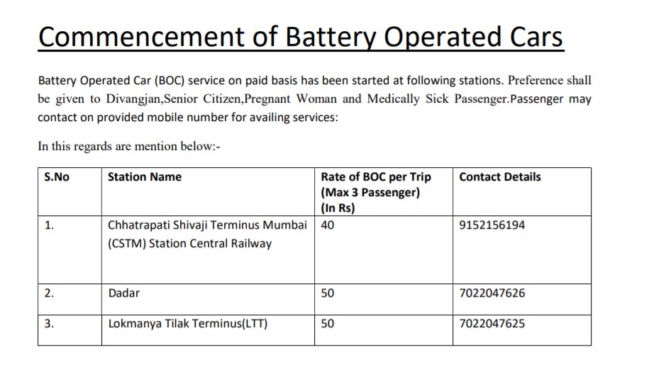
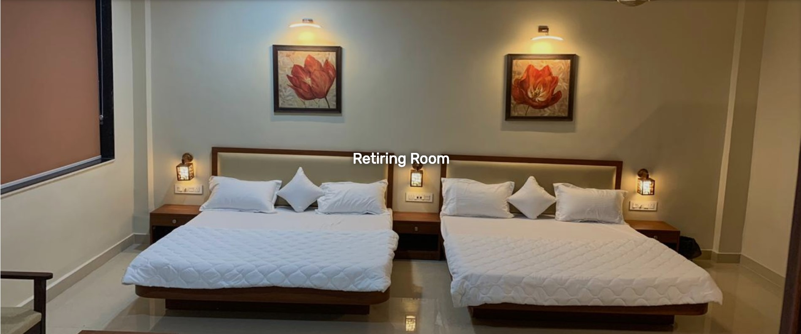

Service At Station
At Railway Stations, We will provide you the best Services which will make your journey more comfortable & enjoyable...
The various types of services available are listed below:-
WI-FI Railway Stations
- Contributing towards fulfillment of Hon’ble PM’s Digital India initiative, Indian Railways decided to provide Wi-Fi Broadband facility to Rail users at major Railway stations.
RailTel has taken a lead in providing fast Wi-Fi for the use of passengers at A1, A category Railway stations. RailTel roped in Google as the technology partner for setting up fast Wi-Fi network initially
covering 400 stations for providing fast Wi Fi to millions of passengers everyday.
Wi-Fi services to passengers are being provided under ‘Railwire’, the retail Broadband distribution model of RailTel. Designed to offer users the best Internet experience,
Railwire Wi-Fi will be available to any user who has a working mobile connection on a smartphone.
Railway stations are the places where the cross section of the society is available. This initiative is part of bridging the digital divide & providing high speed access network to all rail users with financial inclusion of Local Cable Operators. This facility shall provide
our railway passengers to remain connected while waiting for the train. They can also use this facility for streaming High Density Videos, do their office work online etc.
RailTel shall be providing high speed end to end network connectivity on Fiber, Google shall be providing the Radio Access Network along with Technology support.
Once implemented this shall be one of the largest public Wi-Fi project in the World.The Wi-Fi service shall provide high speed connectivity for viewing uninterrupted high definition video, download of movies, songs, games by the passengers at Railway station
Battery Operated Cars

Retiring Rooms
We will provide you the best rooms for stay!!
